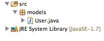
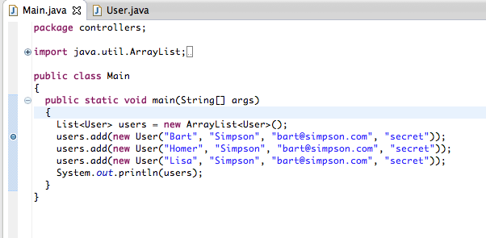
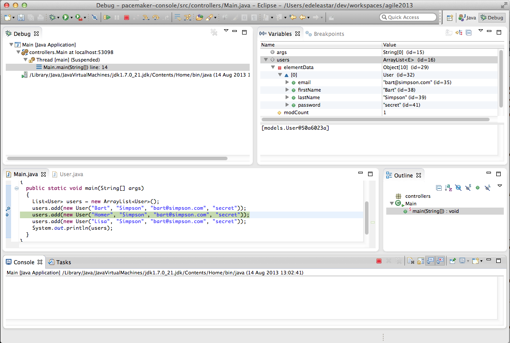
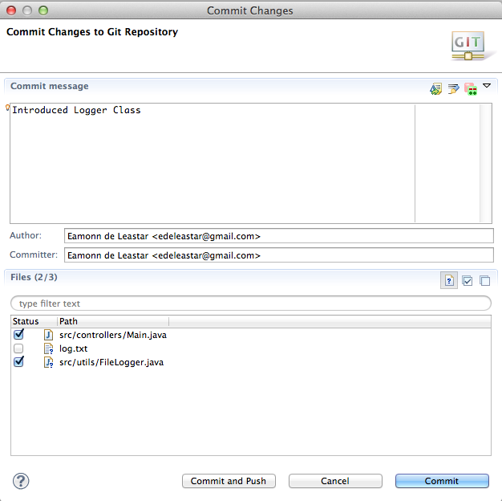

Objectives
The objective of this lab set up a simple command line app to be used as a foundation for exploring TDD in subsequent labs
Pacemaker Version 1
Create a new project - select 'File->New->Project' select "Java Project". Fill out the "New Java Project" wizard as shown:

Press "Finish". In the new project, select 'src', right click and select 'new->package'. Call the package 'models' and press finish:
Selecting "models", select "File->New" and select "Class". Name the class "User":

Edit the User.java source - and replace the current contents with the following
package models;
public class User
{
public String firstName;
public String lastName;
public String email;
public String password;
public User()
{
}
public User(String firstName, String lastName, String email, String password)
{
this.firstName = firstName;
this.lastName = lastName;
this.email = email;
this.password = password;
}
}
In a new package called 'controllers', create a lass called "Main" (follow same steps used to create User class above). Replace the contents of Main.java with the following
package controllers;
import java.util.ArrayList;
import java.util.List;
import models.User;
public class Main
{
public static void main(String[] args)
{
List<User> users = new ArrayList<User>();
users.add(new User("Bart", "Simpson", "bart@simpson.com", "secret"));
users.add(new User("Homer", "Simpson", "bart@simpson.com", "secret"));
users.add(new User("Lisa", "Simpson", "bart@simpson.com", "secret"));
System.out.println(users);
}
}
The workbench should now look as follows (ignore the 'labs' node in package view for the moment):

Launch the application as follows. Do this by selecting "Main.java" in the Package Explorer and select "Run->Run As->Java Application". This executes the application (running main) which in turn prints output to the console.

Debugger
Now explore the "users" data structure in the debugger: Editing the Main.java source file, double click inside the scroll bar on first line of the main method:

This creates a breakpoint (visually a small blue bubble). Run the program again: - this time under the debugger. Quickest way to do this is to press the "Debug last launched" button.
You may see the permissions dialog again:

and also a switch perspective dialog:

Finally, the workspace will be reconfigured as follows:

Selecting 'Run->Step Over" from the eclipse menu several times will execute each line of the main method.

Note the editor view shows each line under execution. The Variables view shows the contacts data structure being populated.

Exploring the variable window should enable you to inspect each contact object as it is inserted. This variable window can also show a "Logical View" of the data structure (press the second button in the toolbar)

To terminate the application, press the button in the Console view:

... and the restore the Java "Perspective":
If you are not familiar with debugging in eclipse, spend some time repeating the above steps. In particular, hover over the various tool bar buttons visible in the debug perspective to get an general understanding of how to control and explore a running application.
Git Version Control
Before moving on to the next step - we will commit this project to 'git' version control.
First, right click on the project and select 'Team->Share Project'

In the next dialog select 'git'

and then you will see this:

Tick the 'Use or create repository', and then press the 'Create Repository' button:

Noting particularly noticable will change -

But you can now press finish.
You may notice that your ecipse project icons look a little different.

Now, select the project again in Package Explorer, select 'Team' - and this time the menu will be different:

Select 'Commit' - and enter details as shown here:

Press "Commit" - and now the icons will change again:

Although we haven't saved this to any external server, we have preserved the applications current structure.
Logger
Create a new package in the eclipse project, called 'utils'

Introduce the following class into that package:
package utils;
import java.io.FileNotFoundException;
import java.io.FileWriter;
import java.io.IOException;
import java.io.PrintWriter;
public class FileLogger
{
private static FileLogger logger;
private FileLogger()
{
}
public static FileLogger getLogger()
{
if (logger == null)
{
logger = new FileLogger();
}
return logger;
}
public boolean log(String msg)
{
try
{
PrintWriter writer = new PrintWriter(new FileWriter("log.txt", true));
writer.println(msg);
writer.close();
}
catch (FileNotFoundException ex)
{
return (false);
}
catch (IOException ex)
{
return (false);
}
return (true);
}
}
Project workspace should be structured as follows:

Edit the Main.java, replacing the main method with the following:
public static void main(String[] args)
{
FileLogger logger = FileLogger.getLogger();
logger.log("Creating user list");
List<User> users = new ArrayList<User>();
users.add(new User("Bart", "Simpson", "bart@simpson.com", "secret"));
users.add(new User("Homer", "Simpson", "bart@simpson.com", "secret"));
users.add(new User("Lisa", "Simpson", "bart@simpson.com", "secret"));
System.out.println(users);
logger.log("Finished - shutting down");
}
Note that there will be one error - the FileLogger class is being used in the Main.without being imported. Selecting the error in the editor will pop-up some autocorrect suggestions:

If you select the one shown then the appropriate import will be inserted into the class:
import utils.FileLogger;
Execute the program. Do this be selecting main.java in the package explorer, and selecting menu "Run->Run As->Java Application" as before.
The console should list data structure as before, and a log file "log.txt" should be generated. As the file is just generated, it will not be visible in the workspace. To view it, select the 'pacemaker-console' project in the package explorer, and select "File->Refresh". Package explorer will be updated to reflect the new file generated in the workspace:
Double click log.txt to view the log:
Before we finish this step, we can 'commit' changes we have just made. In Package Explorer, select the project, right click and select 'Team->Commit'.

Fill out as shown above (not we do not commit the log file) - and press 'Commit'
Notice the changes in the package explorer icons:

XStream
Navigate to
Select 'Download' and, under "Stable Version' download the 'XStream Core only'. This should be a single jar file called 'xstream-x.x.x.jar'
In Eclipse Package Explorer, create a new folder "lib". Do this be selecting the project, select "File->New->Folder". In the offered dialog, enter "lib" as the file name. Drag the xstream.jar file already downloaded into the lib folder: Workspace should look like this

Right click on xstream- and select "Build Path->Add to Build Path". Workspace should now look like this:

Replace the main function (not the entire class Main) with this version here:
public static void main(String[] args) throws IOException
{
FileLogger logger = FileLogger.getLogger();
logger.log("Creating user list");
List<User> users = new ArrayList<User>();
users.add(new User("Bart", "Simpson", "bart@simpson.com", "secret"));
users.add(new User("Homer", "Simpson", "bart@simpson.com", "secret"));
users.add(new User("Lisa", "Simpson", "bart@simpson.com", "secret"));
System.out.println(users);
logger.log("Serializing contacts to XML");
XStream xstream = new XStream(new DomDriver());
ObjectOutputStream out = xstream.createObjectOutputStream(new FileWriter("users.xml"));
out.writeObject(users);
out.close();
logger.log("Finished - shutting down");
}
Use the autocorrect feature to correct the package import errors. If used appropriately, the following import statements should be added to the class:
import java.io.FileWriter;
import java.io.IOException;
import java.io.ObjectOutputStream;
import java.util.ArrayList;
import java.util.List;
import com.thoughtworks.xstream.XStream;
import com.thoughtworks.xstream.io.xml.DomDriver;
import pim.log.FileLogger;
Run the program (use steps as before). A file called "users.xml" will have been generated. Using the refresh step from before, make this file visible in package explorer, and open the file.
Two views should be visible. A "Design" view:

and a "Source" view

We have used a component (xstream) to convert an internal data structure into an XML stream, which we have written to a file.
See if you can commit the changes we have just made to git.
Git
If you have been committing your project to git during this lab, you should be able to select Team->Show in History:
This show each of the commits you have made, including the comments. As yet, this is all taking place locally in your own workstation. We can confirm this be selecting Team->Show in Repositories View:

The Remotes icon is currently empty.
Now sign up / sign in to github.com and create a new repository. Call it pacemaker:

Click 'Create repository'...
In the above screen, locate the 'Quick Setup' panel and select 'HTTPS', Then select the 'Copy to Clipboard' icon (or manually copy/paste) to get the url into the clipboard.
Back in eclipse, select the Remotes icon on the Repository view and right click:
Select 'Create Remote'
... and something like the following will be displayed:
Call the remote 'origin' (which will be the default)
This screen will be next:

Press the 'Change' button, and you will have an opportunity to past in your url. Some of the fields will be pre-populated, you will have to enter others.

Make sure the username/password is your github credentials.
Press 'Finish' and on the next screen Press 'Finish & Push'
Your repository should be pushed to github.
If all has gone to plan, then the 'Git Repositories' view should reveal the new 'origin':

And the repository should be available (publicly) on your gitub repo:

Explore the repo, and verify that the code has been successfully posted.
Exercises
Archive of lab so far:
Data Structures
Step 6 used the ArrayList data structure. For an elegant introduction to this, and the collections framework as a whole, take a look at this trial here:
In particular, the ArrayList is discussed here:
See if you can modify the code to use LinkedList instead of ArrayList. What would be the benefits?
JSON
For many uses, XML has largely been replaced with JSON:
Which offers some considerable benefits as a simple representation of data structures. The XML library you used in Step 7 also supports JSON.
There are only two small changes required to output JSON - which are contained in the first code fragment. The existing xstream jar file will not be sufficient for it to run (although it will compile successful). Following the instructions for incorporating a jar file in step 7, see if you can import these two libraries here:
If these are part of the build path, then the xstream component should be able to generate json versions of the data structure.